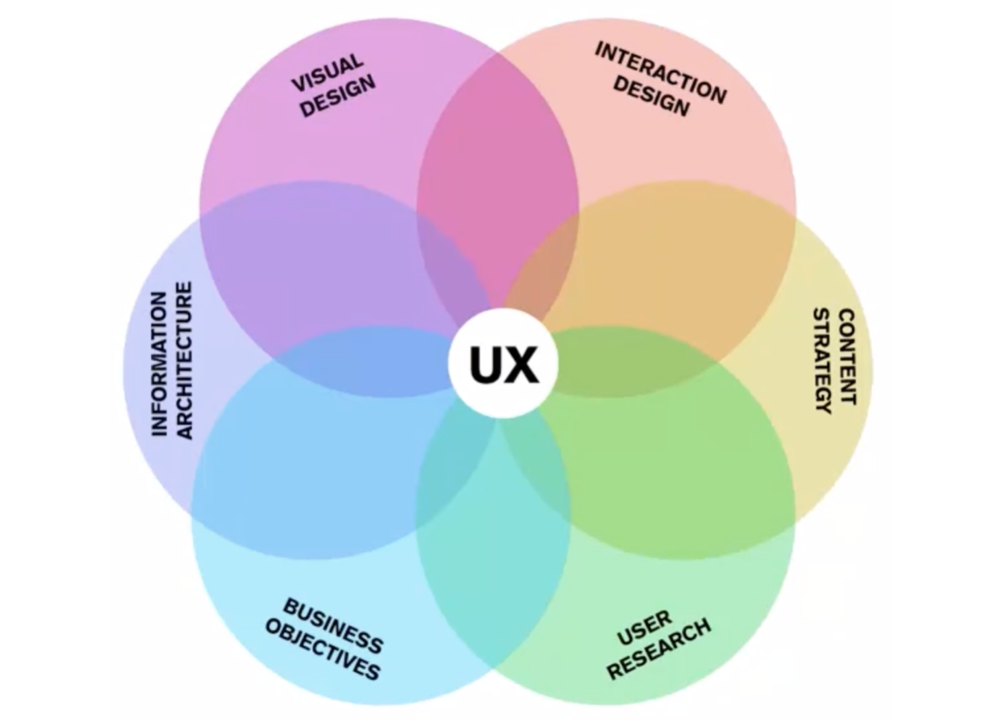
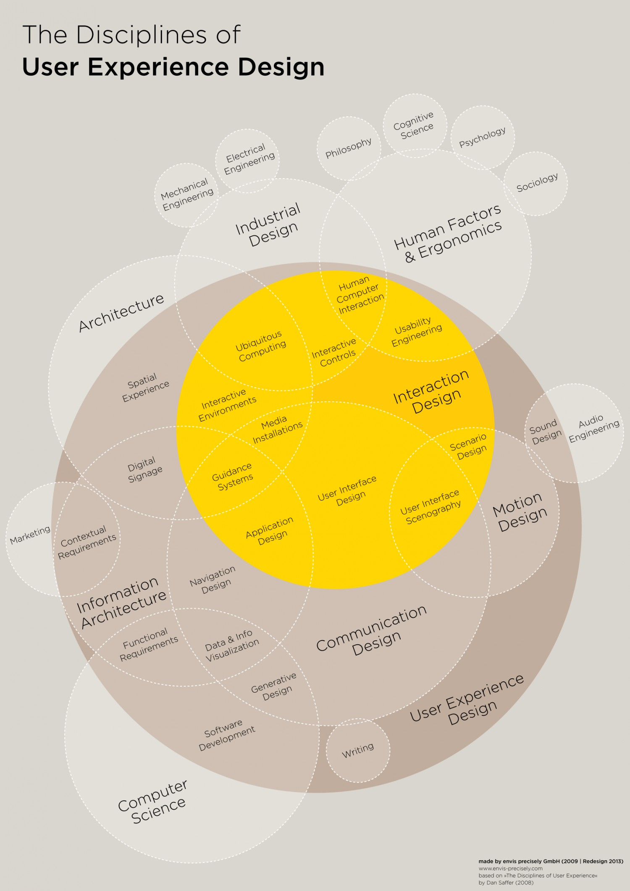

Overview

Source: Role Venn Diagram, Krispian Emert
Core UX Roles
- Business Objectives
- User Research
- Information Architecture
- Content Strategy
- Visual Design
- Interaction Design
Detailed Look

Source: The Disciplines of User Experience Design, Envis Precisely
Back to the homepage – Back to top